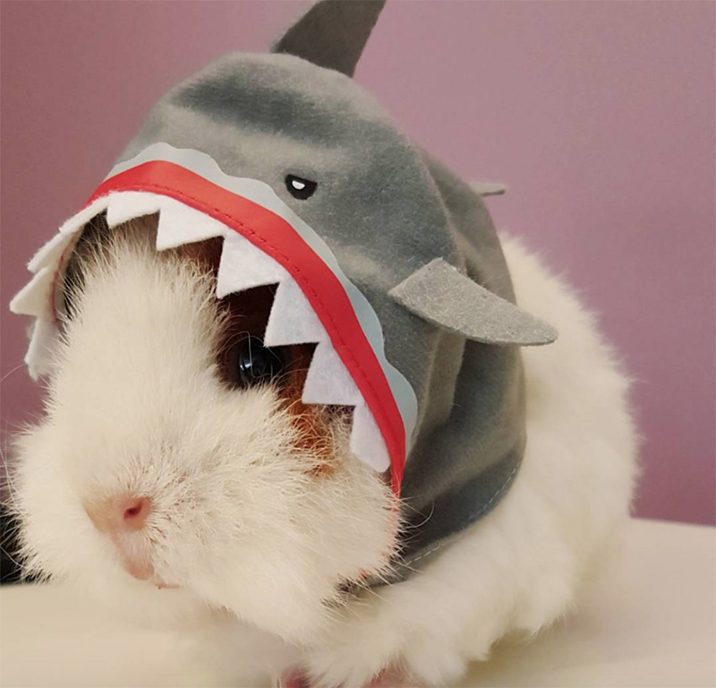

Here are some Frequently Asked Questions
Food Info
Housing info
Additional links.
Why this website?
This page aims to educate all users on the importance of guinea pig health and how to properly take care of guinea pigs. To ensure you get the best information possible, we recommend doing additional research, but we will also provide links for your convenience.
What is a guinea pig?
A guinea pig is any one of the many, many breeds of domesticated Cavia porcellus, the wild Cavy. Cavys and guinea pigs are like wolves and dogs, where guinea pigs are the friendly pets and cavys are the wild animals. Guinea pigs were commonly used as a food source in the 1800s (and still are today in many South American countries), but are now popular household pets!
Why did you make this website?
Because they are SO DARN CUTE. Look at this one!

HE'S A SHARK
What foods do guinea pigs like?
Guinea pigs are dedicated vegans, let's give them a shoutout for all their hard work! Guinea pigs cannot digest meat, eggs, or dairy, so be very careful when buying treats, as some guinea pig treats are actually very bad for them. Additionally, guinea pigs should be fed a minimal amount of fruits, corn, wheat/grains, and spinach. Guinea pigs love their fruits and veggies, so give them lots of vegetables for breakfast and dinner, give them fruits as treats, and make sure they always have access to clean water and fresh hay (yes, guinea pigs eat hay. up to 90% of their diet is hay, as it wears down their teeth and helps the guinea pig's digestive system. Guinea pigs digest so much fiber that the only way for their bowels to keep moving is to shove in more fiber.)
A good rule of thumb is a small piece of fruit every week or so, or a strawberry every three weeks. Guinea pigs may also eat their own fur (usually if they're scared or stressed), wood (it's good for their teeth) and carpet (this one's bad, keep them away from carpet and wiring, they will chew through it as if it were a delicious carrot, not disgusting treated rubber).
What is a guinea pig's diet?
As I said before, guinea pigs need lots of veggies, some fruits, plenty of hay and water, and very few treats or other foods. Specifically, guinea pigs need a variety of nutrients which can be found in letuce, radishio, parsley, cilantro, kale, clover, dandelion, chard, and spinach, even though I said NOT to feed your guinea pig spinach -- I'll explain why: young guinea pigs need spinach to help bone growth, but in adult guinea pigs the calcium in spinach can cause kidney stones
Guinea pig housing?
Guinea pigs need lots of space to run around and hide. The basic guinea pig cage is a 30x36 inch cage for up to 3 guinea pigs, adding another cage for every two guinea pigs after that. You can also add multiple levels to your guinea pig cage so your pets have extra space in height and more places to hide. If you want to get another cage mate for your pig, just make sure they are neutered, the same sex, and bonded before hand. That being said if you want to breed guinea pigs...
Can I breed guinea pigs?
No, don't.
Guinea pigs can have huge litters, and baby guinea pigs can be sexually active in under 3 months, it's better to adopt your guinea pigs from local animal shelters than to buy from breeders (animal shelter pigs are often healthier, friendlier, and less expensive) and even worse to try breeding yourself.
Guinea pig temperment?
Guinea pigs are friendly, cuddlesome, and all around adorable, but you must remember they are prey animals. They get along with other prey animals, and if you introduce a young kitten and a guinea pig, they might both be fine, but guinea pigs smell and act like prey, so it is much better to keep them seperated from any other pets you may have (dogs, cat, ferrets, etc). However, guinea pigs are still very curious and amiable, so if your pet is indifferent toward them, you could let them hang out (always with direct supervision, of cource) but that is not recommended.
ANOTHER THING, guinea pigs are indoor pets. Do not put them outdoors for too long EVER.
That's about it for guinea pig care. Here is a useful list of guinea pig links if you need help.
- Wikipedia on guinea pigs
- Genereal guinea pig info
- Care facts by Petco
- 40 guinea pig fatcs